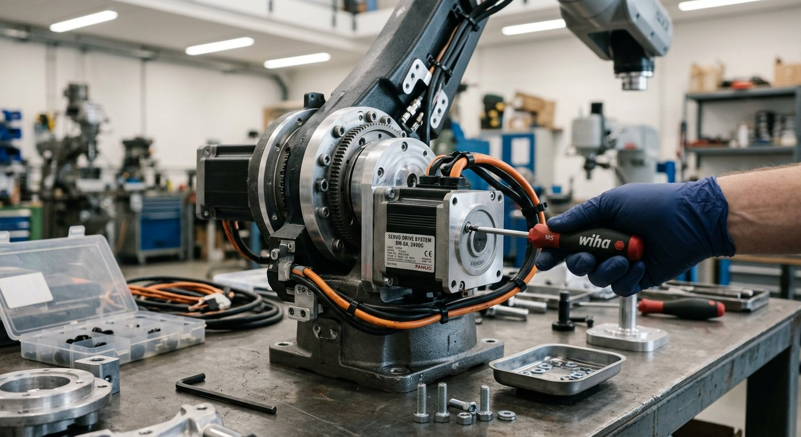

Qué cubre esta guía
- Grados de libertad: por qué 6 ejes
- Anatomía del brazo: base, hombro, codo y muñeca
- Servos vs. motores paso a paso
- Materiales de la estructura
- Cinemática directa e inversa (conceptos)
- Código: mover seis servos con la librería Servo
- Alimentación: el error que arruina los brazos
- Problemas comunes y soluciones
- Preguntas frecuentes
Grados de libertad: por qué 6 ejes
Cada eje de un brazo robótico es un grado de libertad: una articulación que puede girar de forma independiente. Seis ejes es un número especial en robótica porque permite que el efector (la pinza, ventosa o herramienta) alcance cualquier punto y cualquier orientación dentro del espacio de trabajo, exactamente como un brazo humano.
- Tres ejes posicionan: la base (rotación), el hombro y el codo ubican la muñeca en el espacio.
- Tres ejes orientan: el giro, la inclinación y la rotación de la muñeca apuntan la herramienta en la dirección correcta.
Los brazos de menos ejes (4 o 5) son más simples pero no alcanzan todas las orientaciones, y los brazos redundantes (7 ejes, como algunos colaborativos) agregan flexibilidad para esquivar obstáculos a costa de mucha más complejidad de control.
Anatomía del brazo: base, hombro, codo y muñeca
Un brazo de 6 ejes se organiza en segmentos conectados por articulaciones rotatorias:
| Articulación | Función | Movimiento |
|---|---|---|
| Base (J1) | Gira todo el brazo | Rotación horizontal (0–180°) |
| Hombro (J2) | Levanta el antebrazo | Inclinación vertical |
| Codo (J3) | Extiende el brazo | Inclinación vertical |
| Muñeca giro (J4) | Rota el antebrazo | Rotación |
| Muñeca inclinación (J5) | Inclina la herramienta | Inclinación |
| Muñeca rotación (J6) | Rota la herramienta | Rotación |
En un brazo casero con servos, cada articulación es un servomotor que gira dentro de su rango (normalmente 0–180°). La base suele usar un servo de mayor torque porque carga con el peso de todo el brazo, mientras que la muñeca usa servos pequeños para minimizar la inercia.
Servos vs. motores paso a paso
| Aspecto | Servomotor | Paso a paso |
|---|---|---|
| Control | Ángulo objetivo por PWM | Pasos y dirección (driver) |
| Posición absoluta | Interna (potenciómetro) | No (necesita encoder) |
| Torque relativo | Medio-alto (metálicos) | Alto en baja velocidad |
| Facilidad | Muy alta | Media |
| Ideal para | Brazos educativos | Brazos que cargan peso |
Materiales de la estructura
- Kits de acrílico cortado por láser: económicos, rígidos y listos para armar; ideales para el primer brazo, aunque limitan el rediseño.
- Impresión 3D: piezas a medida, ligeras y reparables; exige buena calibración y filamento resistente (PETG o ABS antes que PLA, que se deforma con el calor).
- Tornillería y rodamientos: minimizar el juego en cada articulación con bocinas o rodamientos es lo que más mejora la repetibilidad.
- Servos de engranaje metálico: el engranaje plástico se desgasta y pierde precisión; el metálico dura mucho más bajo carga.
Cinemática directa e inversa (conceptos)
La cinemática directa responde a la pregunta "si pongo cada articulación en estos ángulos, ¿dónde queda la pinza?". Se calcula encadenando las transformaciones de cada articulación. La cinemática inversa hace el camino contrario: "quiero que la pinza esté en esta posición y orientación, ¿qué ángulos necesito en cada articulación?".
Para un brazo casero puedes empezar con una cinemática inversa geométrica resuelta con trigonometría simple (triángulos para el plano del hombro y el codo), que es suficiente para posicionar la muñeca sin matrices de rotación. La cinemática completa con orientación de muñeca se aborda en guías más avanzadas de ROS 2 y software.
Código: mover seis servos con la librería Servo
#include <Servo.h>
// Declara un objeto por cada articulacion
Servo base, hombro, codo, munecaGiro, munecaInc, munecaRot;
// Pines de cada servo (ajusta segun tu conexion)
const int PIN_BASE = 3;
const int PIN_HOMBRO = 5;
const int PIN_CODO = 6;
const int PIN_MUNECA_GIRO = 9;
const int PIN_MUNECA_INC = 10;
const int PIN_MUNECA_ROT = 11;
void setup() {
base.attach(PIN_BASE);
hombro.attach(PIN_HOMBRO);
codo.attach(PIN_CODO);
munecaGiro.attach(PIN_MUNECA_GIRO);
munecaInc.attach(PIN_MUNECA_INC);
munecaRot.attach(PIN_MUNECA_ROT);
posicionInicial();
}
// Lleva el brazo a una postura de reposo
void posicionInicial() {
base.write(90);
hombro.write(90);
codo.write(90);
munecaGiro.write(90);
munecaInc.write(90);
munecaRot.write(90);
delay(1000);
}
// Mueve todas las articulaciones de forma suave hasta un objetivo
void moverHasta(int b, int h, int c, int mg, int mi, int mr) {
int pasos = 30;
for (int i = 0; i <= pasos; i++) {
base.write(map(i, 0, pasos, base.read(), b));
hombro.write(map(i, 0, pasos, hombro.read(), h));
codo.write(map(i, 0, pasos, codo.read(), c));
munecaGiro.write(map(i, 0, pasos, munecaGiro.read(), mg));
munecaInc.write(map(i, 0, pasos, munecaInc.read(), mi));
munecaRot.write(map(i, 0, pasos, munecaRot.read(), mr));
delay(15);
}
}
void loop() {
moverHasta(45, 120, 60, 90, 30, 90);
delay(500);
posicionInicial();
delay(500);
}El movimiento interpolado (en lugar de saltar directo al ángulo) evita golpes bruscos que sacuden la estructura y pierden precisión. A partir de aquí puedes sumar un joystick, un control por Bluetooth con la guía del módulo HC-05, o una secuencia de movimientos grabados.
Alimentación: el error que arruina los brazos
El síntoma más común al construir un brazo es que se reinicie o tiemblen los servos al mover varios a la vez. La causa casi siempre es la alimentación:
- Cada servo puede consumir picos de 500 mA a 1 A al arrancar; seis juntos superan lo que entrega el USB o el regulador del Arduino.
- La solución es una fuente externa de 5–6V con 3 a 6 A solo para los servos, con la tierra común conectada a la del Arduino.
- La señal de control va del Arduino al servo; la potencia va de la fuente al servo. Nunca mezcles la corriente de los servos a través de la placa.
Problemas comunes y soluciones
| Síntoma | Causa probable | Solución |
|---|---|---|
| El brazo se reinicia al moverse | Alimentación insuficiente | Fuente externa de 5-6V con suficiente corriente |
| Los servos tiemblan en reposo | PWM inestable o fuente ruidosa | Condensador en el riel y fuente estable |
| No llega a la posición exacta | Juego mecánico en las articulaciones | Rodamientos, tornillería ajustada, servos metálicos |
| Un servo no se mueve | Pin equivocado o servo dañado | Verificar el pin y probar el servo solo |
| El brazo vibra al cargar peso | Estructura flexible o servo subdimensionado | Reforzar estructura y subir de servo |
Conclusión
Construir un brazo de 6 ejes con Arduino es el proyecto que une mecánica, electrónica y programación en un solo desafío: eliges la estructura, dimensionas los servos, alimentas correctamente y programas el movimiento. Con la base funcionando, los siguientes pasos son el cableado profesional con Arduino Mega, el control inalámbrico con ESP32 y, para precisión real, los encoders de articulación.
Preguntas frecuentes
¿Qué significa que un brazo robótico tenga 6 ejes?
Cada "eje" es un grado de libertad, es decir, una articulación que puede girar de forma independiente. Seis ejes es un número especial porque permite posicionar el efector (la pinza o herramienta) en cualquier punto del espacio con cualquier orientación, dentro del alcance del brazo: tres ejes ubican la posición (base, hombro y codo) y tres orientan la muñeca (giro, inclinación y rotación). Por eso los brazos industriales más usados son de 6 ejes: replican el rango de movimiento del brazo humano.
¿Qué es mejor para un brazo robótico: servos o motores paso a paso?
Depende del objetivo. Los servomotores son más simples de controlar (reciben un ángulo objetivo y se posicionan solos), económicos y suficientes para brazos educativos de bajo peso; su desventaja es que la mayoría no entrega retroalimentación de posición y su precisión es limitada. Los motores paso a paso ofrecen más torque y movimiento continuo, pero requieren drivers y no saben su posición absoluta sin un encoder. Para empezar, seis servos estándar son la opción más accesible; para brazos que levantan más peso, se migra a servos de engranaje metálico o a steppers con encoder.
¿Qué estructura conviene para un brazo de 6 ejes casero?
Las dos opciones más comunes son los kits de acrílico cortado por láser y las piezas impresas en 3D. El acrílico es barato, rígido y viene listo para armar, pero se raya y limita el diseño. La impresión 3D permite diseñar piezas a medida, es ligera y reparable, aunque requiere calibrar bien la impresora. En ambos casos, la clave está en minimizar el juego mecánico en las articulaciones (usar rodamientos o bocinas ajustadas) y elegir servos con engranaje metálico, porque el plástico se desgasta y pierde precisión con el uso.
¿Por qué mi brazo robótico se reinicia o tiembla al mover varios servos a la vez?
Es el síntoma clásico de alimentación insuficiente. Cada servo puede consumir picos de 500 mA a 1 A al arrancar, y seis servos juntos superan con creces lo que entrega el regulador del Arduino o un cable USB. La solución es alimentar los servos con una fuente externa de 5-6V con suficiente corriente (3 a 6 amperios para seis servos), conectando la tierra de esa fuente a la tierra del Arduino. Si además tiemblan al mantener posición, suele ser por una señal PWM inestable, y usar un shield de servos o alimentar bien el riel lo corrige.
¿Puedo controlar un brazo de 6 ejes con un Arduino Uno?
Sí, un Arduino Uno puede controlar seis servos con la librería Servo, pero con limitaciones: la librería desactiva el PWM de algunos pines y solo genera señales estables en un subconjunto de ellos (típicamente los pines 3, 5, 6, 9, 10 y 11). Además, si necesitas leer encoders, sensores de fuerza o comunicarte por varios buses, los pines y la memoria del Uno se agotan rápido. Para brazos con más periféricos, el Arduino Mega (más pines y memoria) es la opción natural, como se detalla en la guía de cableado con Mega.
Este artículo es contenido editorial independiente: no contiene ubicaciones patrocinadas ni enlaces de afiliado. Si en futuras actualizaciones se agregan enlaces a proveedores de componentes, serán identificados explícitamente. El código y las conexiones son referenciales y deben adaptarse y probarse con tu propio hardware. Si detectas un error en esta guía, por favor avísanos.
Sigue aprendiendo
Con la estructura armada, organiza las conexiones con la Guía de Cableado con Arduino Mega y lleva el control a la nube con el ESP32 como Controlador.
Fuentes primarias y lecturas recomendadas
Referencias que sustentan los conceptos generales de la guía. Los valores exactos de torque y corriente dependen del fabricante del servo.
- Arduino Reference — Librería Servo
- Arduino Reference — map()
- All About Circuits — Referencia técnica de electrónica básica
Enlaces revisados: 13 de agosto de 2026.